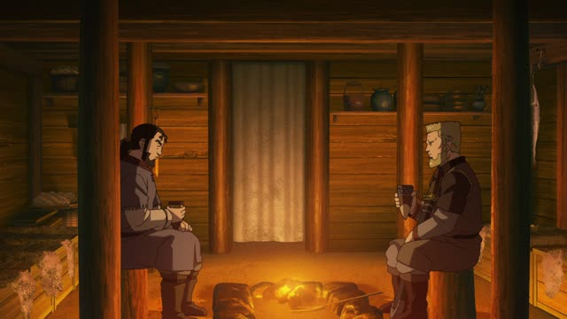
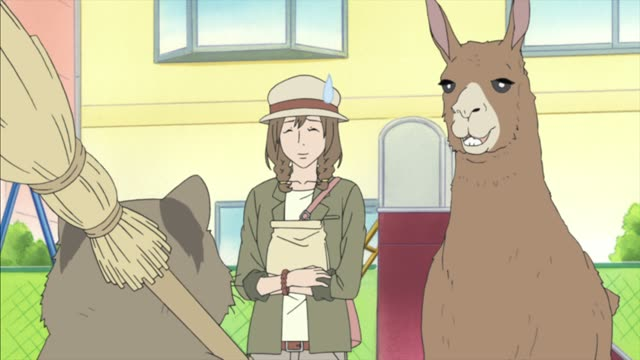
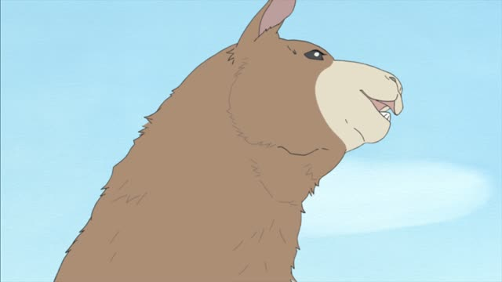
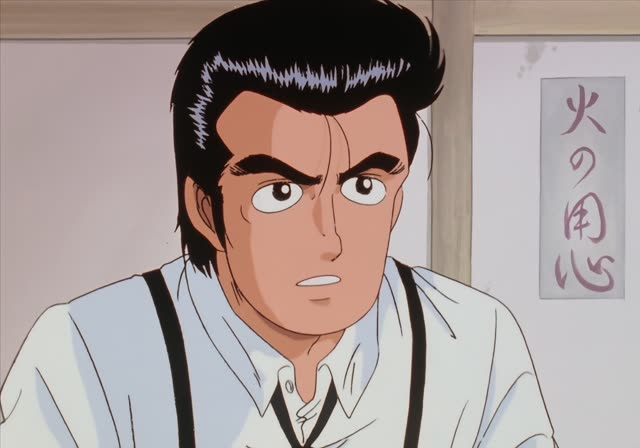
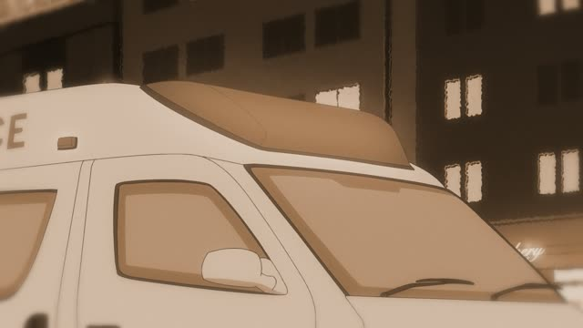
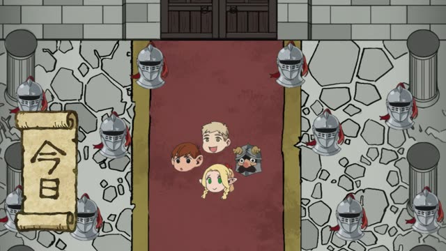
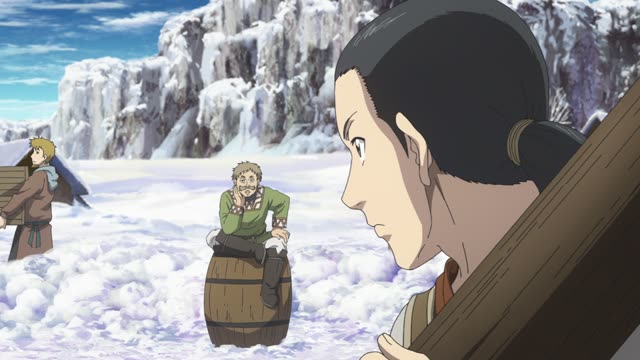
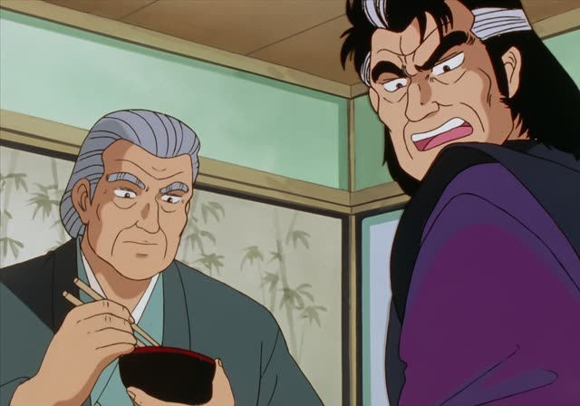
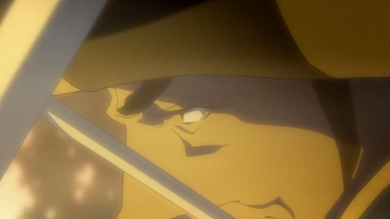

Passive form
| Polite | ～られます・～れます |
|---|---|
| Casual | ～られる る-verbs: drop る, add られる・～れる う-verbs: u-sound → a-sound, add れる |
Same meaning: "it was done to me". Only the politeness changes. する → される, 来る → 来られる.

Vinland Saga · Episode 2
イングランド軍に殺害されました。
"They were killed by the English army." [many Danes]
The passive form means "was done (to me)": the person something happens to comes first, and the one who does it gets に. 怒る → 怒られる (be scolded), 殺す → 殺される.
On this card, a messenger reports news of the war. 殺害する → 殺害される: "be killed". The doer is イングランド軍に. ました makes it polite.
Japanese uses it a lot for things that happen to you and annoy you: 雨に降られた, "I got rained on".

Shirokuma Cafe · Episode 49
いつもアライグマさんに怒られて
"I was always getting scolded by Mr. Raccoon"
On this card, a llama remembers the old days. 怒る → 怒られる: "be scolded". Who did it: アライグマさんに.
Quick Examples
You come home late.
母に怒られました。
"I got scolded by my mom."
PoliteYour friend lost her bike.
自転車を盗まれた。
"My bike got stolen."
盗む → 盗まれる.
CasualAt work.
部長に呼ばれました。
"I was called in by the manager."
PoliteOn the train.
足を踏まれた！
"Someone stepped on my foot!"
Literally "my foot was stepped on".
CasualWith and without
母が私を怒った。
"My mom scolded me." Mom is the focus.
私は母に怒られた。
"I got scolded by my mom." I'm the focus.
Examples from Media

Shirokuma Cafe · Episode 48
それは、ラマに聞かれてもわからないですね。
"Even if you ask a llama that, he won't know."
聞く → 聞かれる. Asked what gift to give a girl.

Oishinbo · Episode 12
そこで俺は、あいつに徹底的にしごかれた。
"That's where he drilled me hard."
しごく → しごかれる: be trained hard.
Good Morning Call · Episode 9
まりなだって、みっちゃんに告白された時
"Even you, Marina, when Micchan confessed to you"
する → される.

Odd Taxi · Episode 7
俺たちの両親は、ひき逃げ犯に殺された。
"Our parents were killed by a hit-and-run driver."

Dungeon Meshi · Episode 3
今日は明らかに進行を妨害されたな。
"Today we were clearly being blocked."

Vinland Saga · Episode 2
トールズに頼まれたんだ。
"Thors asked me to."
頼む → 頼まれる: be asked.

Oishinbo · Episode 12
だから私は、食事に呼ばれるのがイヤなんだ。
"That's why I hate being invited to dinner."

Samurai Champloo · Episode 14
どっちも、この地獄に愛された男さ。
"They're both men loved by this hell."